本チュートリアルでは、Skylineターゲット質量分析環境における選択イオンモニタリング（SRM: Selected Ion Monitoring、または多重反応モニタリング（MRM）とも呼ばれる）メソッドの最適化に利用する機能を紹介します。紹介される概念の多くは、Parallel reaction monitoring（PRM）やデータ非依存性測定 （DIA）にも適用されるでしょう。
あるタンパク質の理想的なターゲットペプチドが不明な場合でも、Skylineを用いると広範囲なペプチドを測定対象としたメソッドを容易に作成でき、サンプルマトリクス中で最も測定しやすいペプチドを探索できます。さらにこのメソッドを用いて行った測定結果をSkylineへとインポートすることにより、メソッドを改良し、測定を繰り返してこれを改善していくことも可能です。
これをターゲットメソッド最適化サイクルと呼び、下図に示すような考え方を表すことが多くあります。
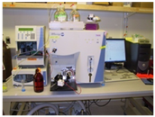メソッド
を構築
メソッド
を実行
結果を評価
最適化 :
その他
このサイクルを繰り返すことで、同時に数十から数千のタンパク質を対象とした最適なターゲットメソッド構築ができます。また実験目的に沿った最良のペプチド、プロダクトイオン、および装置設定をメソッドに組み込むことができます。ただしサイクル開始時のリストが大きいときには、他のチュートリアルで紹介されているグループ比較や詳細ピーク検出モデルといった統計メソッドを用いてサイクルを開始することもできます。
本チュートリアルでは、ターゲットメソッド最適化サイクルを2回半行う例を示します。この例に従ってさらにサイクルを繰り返すことで、最適な定量メソッド構築を行うことができます。
チュートリアルを始める前に、以下のzipファイルをダウンロードしてください。
https://skyline.ms/tutorials/MethodRefine.zip
この中のファイルを、以下のコンピュータ上のフォルダで解凍します。
C:\Users\brendanx\Documents
これにより以下の新しいフォルダが作成されます。
C:\Users\brendanx\Documents\MethodRefine
本チュートリアルを始める前にSkylineを使用していた場合には、Skylineをデフォルト設定に戻すことをお勧めします。デフォルト設定に戻すには、以下の操作を行います。
このSkylineファイルのドキュメント設定がデフォルトにリセットされました。
このチュートリアルはプロテオミクスに関するものであるため、以下のようにしてプロテオミクス用インターフェイスを選択できます。

Skylineは、Skylineウィンドウの右上隅のプロテインアイコン  で表示されるプロテオミクスモードで動作しています。
で表示されるプロテオミクスモードで動作しています。
これでWormUnrefined.skyファイルを開いて開始する準備ができました。
開始するには、以下の操作を行います。
ライブラリから、MacCossラボの装置で測定されたこのペプチドのMS/MSスペクトルおよび、プロダクトイオンy3～y15についての時間-強度クロマトグラムが表示されます。
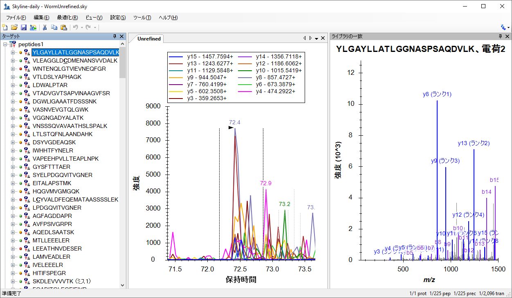
注：各ペプチドに関連付けられたライブラリ内のMS/MSスペクトルは、イオントラップ型質量分析計を用いた測定結果から得られたものです。
Skylineの左側のペプチド表示では、ペプチド配列の左に緑、黄、赤の点が表示されています。これらはピーク品質アイコンといい、それぞれの意味は以下の通りです。
このライブラリは、39個のThermo RAWファイルをドキュメント内へインポートしたものから構成されています。Skyline画面右下の数字をご覧ください。ドキュメント内には225個のペプチドと2096のトランジション（各ペプチドのy3～y(n-1)をカバー）が保存されています（ここでnはペプチドシーケンス内中のアミノ酸数です）。
Skylineドキュメントの目標は、特定のターゲットマトリックスで測定可能なペプチドを決定し、測定可能なペプチドの最良トランジションを決定することでした。ペプチドあたりのトランジション数が多いほど、測定されたピークが対象ペプチド由来であるという信頼度が高くなります。この信頼度は、対象ペプチドの各トランジションにおけるピーク強度と、ライブラリ上にある同一ペプチドのスペクトル1、2との類似度（内積を用いた相関）から得られます。
ペプチドを測定するのに必要なトランジションリストを作成するには、以下の手順を実行します。
[ トランジションリストをエクスポート ] は以下のように表示されます。
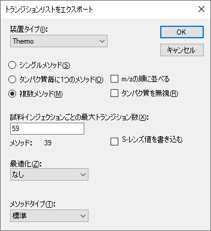
Windows ExplorerでMethodRefineフォルダを開くと、39個の新しいCSVファイル（worm_0001.csv～worm_0039.csv）がフォルダ内に含まれていることがわかります。それぞれのサイズは約4KBで、Thermo社TSQ用未スケジュール化メソッドにインポートできる59個以下のトランジションのリストが含まれています。
注：最新の三連四重極装置は何百ものトランジションを最低2ミリ秒のドウェル時間で同時に測定できます。2009年に本例のデータファイル収集に使用したTSQ Quantum Ultraでは、まだ適切な設定ではありませんでした。
測定結果ファイルのインポート方法を練習するには、別のZIPファイル（36MB）をダウンロードする必要があります。このZIPファイルには、MacCossラボでデータ収集された39個のThermo RAWファイル（非圧縮で161MB）が含まれています。これは、前節でエクスポートしたトランジションリストを用いて測定したものです。
ダウンロードした元のMethodRefine.zipファイルには、データファイルWormUnrefined.skydが入っており、Skylineで必要とされるすべてのデータが含まれています。既存のデータファイルを引き続き利用する場合、以下のセクションはスキップして構いません。
自身でデータを再インポートするには、以下のZIPファイルをダウンロードします。
https://skyline.ms/tutorials/MethodRefineSupplement.zip
続いて前セクションで使用したフォルダにこのファイルを解凍します。これにより次の新しいフォルダが作成されます。
C:\Users\brendanx\Documents\MethodRefineSupplement
Skylineで以下の手順を実行して、以前にキャッシュしたデータを削除します。
クロマトグラムチャートとピーク品質アイコンの両方が、Skylineインターフェイスから削除されます。
これで、元のデータをインポートする準備が整いました。すべてを一度にインポートする必要はありません。巨大な未最適化メソッドからエキスポートした、全トランジションリストのデータ取得が完了する前に、データチェックをするときに本機能は便利です。このチュートリアルでは、データを2つのバッチに分けてインポートします。
まず、次の手順を実行します。
Skylineが15個のファイルのインポートを開始します。インポートの進捗状況は、以下のように [ 結果をインポート ] に表示されます。
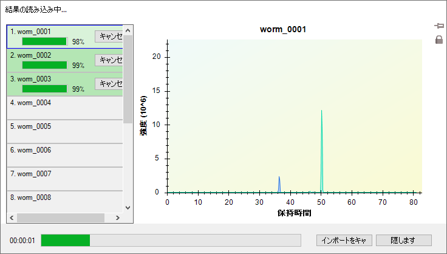
Skylineがこのデータを高性能なデータファイル形式に変換している間も、結果の確認が可能です。ドキュメントの修正を始めることも可能ですが、このチュートリアルでは、以下の手順に従って先に39個の結果ファイルすべてのインポートを完了してください。（ただし、最近のコンピュータは非常に高速なため、みなさんが他の作業を始める前にインポートが完了すると思います。）
インポートが完了すると、次のセクションを開始する準備が整います。データファイルは、削除される前の元のものと一致しています。
ドキュメントを最適化する1つ目の方法として、各ペプチドを目で見て確認して、Skylineが提供する豊富な情報に基づいて、どのトランジションを取捨選択するかを決定する方法があります。これは、ASMS 2009でポスター発表したもので、このチュートリアルのSkylineドキュメントを最適化するときに用いた方法です。各々のペプチドについて目で見て確認し、ライブラリスペクトルと良く一致するピークのトランジションから、3つの最良トランジションを選択するのにかかった時間は、1時間未満でした。
このチュートリアルのSkylineドキュメントを見ると、一つ目のペプチドについて、現在ズームインしているピークよりも、良いピークをSkylineが見過ごしていないか疑問に思うかもしれません。この疑問に答えるには、以下の手順を行ってズームアウトします。
以下のキーボードショートカットは憶えておくと便利です。
これらの機能を利用すると、選択したピークの拡大図と測定した各トランジションの保持時間範囲の全体図との間を、素早く切り替えることが可能です。
ドキュメント内の最初のペプチドのトランジションの保持時間範囲の全体図は、以下の通りです。

一見ノイズの多いデータであるように見えます。より詳細に見るには、保持時間でラベルされたどの大きなピークも、その周辺をマウスでドラッグすると拡大できます。
もし、このペプチド由来の正しい測定結果が含まれていないことが確認できたら、以下の操作を行って一つ目のペプチドをドキュメントから削除します。
クロマトグラムピークについて調べるときには、ペプチドの予測保持時間について何かわかるとも便利です。SkylineにSequence-Specific Retention Calculator（SSRCalc）3.03を統合することで、保持時間予測が可能となりました。保持時間予測の他のメソッドは別のチュートリアルで説明されています。SSRCalc疎水性スコアと測定したペプチドの保持時間との線形回帰直線を見るには、以下を行います。
Skylineに、以下のようなグラフが表示されます。
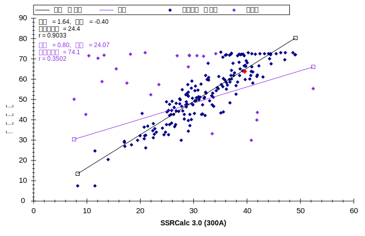
「回帰の改良 refined regression」直線上に、赤色の点がハイライト表示されています。この点は、現在選択されているペプチドに対するSSRCalcスコアおよび測定時間を表しています。ハイライト表示された点は、Skyline [ ターゲット ] 表示で異なるペプチドを選択すると変更されます。
初期設定では、「回帰の改良」を行う残差の閾値として相関係数r = 0.9が採用されており、閾値が満たされるまで回帰から点が削除され異常値の標識が付けられます。なお、閾値の調整は、以下の手順で行います。
Skylineが再度線形回帰を行い、より多くのペプチドを異常値としてマークしてグラフを以下のように変更します。
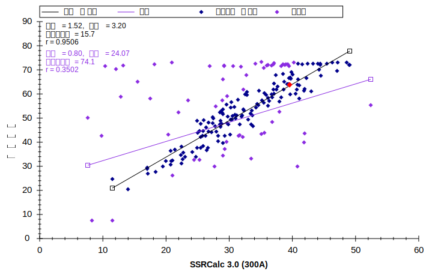
以下の手順を行うことにより、保持時間予測のための新たな線形方程式を作成することも可能です。
Skylineに [ 保持時間予測を編集 ] が表示されます。このフォームには、保持時間回帰グラフからの得られた情報（補正済みの回帰データ（146のペプチド）とその勾配、切片、時間枠のみを含む）が事前に入力されています。Skylineが示す時間枠（当該回帰の残差から得られる標準偏差の4倍値）には146のペプチドの約95%が含まれているはずです。
Skylineは、相関係数rが1.0に最も近くなるような計算式を選択します。現在選択できるのは、孔径100または300オングストロームの逆相系の粒子充填型カラムを用いた測定を学習データとしてトレーニングさせたSSRCalc 3.0のみです。MacCoss labでは、孔径90オングストロームの充填材を使用しているため、SSRCalc 3.0（100Å）でより良いフィットが得られます。
下図のように、クロマトグラムにペプチドの予測保持時間が追加されます。

保持時間予測値周辺の影がついた部分は、[ 保持時間予測を編集 ] で承認したウィンドウ幅（15.7分）を示します。影がついた部分の外側にあるピークはすべて、保持時間が予測値から標準偏差の2倍以上外れたものです。
保持時間回帰グラフを終了してこのドキュメントの手動修正に戻る前に、多くの異常値がX軸上にあることに注目してください。これは、このペプチドのピークが測定結果から発見できなかったために異常値とみなされたということを意味します。その理由を調べるには、以下の操作を行います。
クリックした点が赤でハイライト表示され、[ ターゲット ] 表示をスクロールして選択したペプチド（YLAEVASEDR）を表示します。Escapeキーを押して [ ターゲット ] 表示に戻ると、以下のように表示されます。
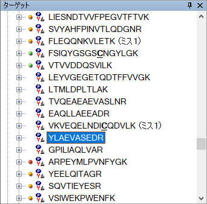
赤いドットのピーク品質アイコンがないということは、このドキュメントにインポートしたRAWファイルの中には、これら7つのペプチドの測定値が存在しないということを表しています。最初にRAWファイルをインポートしたとき、39のトランジションリストと39のRAWファイルがありました。いったい何が起こったのでしょうか?
Skylineを用いてもう少し説明しましょう。
クロマトグラムグラフが以下のように表示されます。
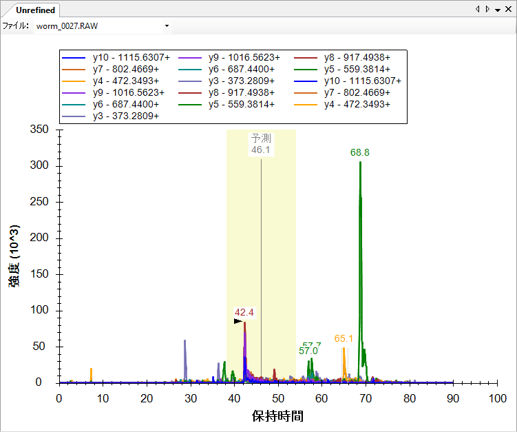
上部に追加された、[ ファイル ] 選択リスト付きのツールバーに注目してください。このリストをクリックすると、worm_0027.RAWおよびworm_0028.RAWの両方がこのペプチドの測定値を含んでいると表示されます。
将来、1回の試料インジェクションで1つのペプチドを2度測定する必要が出てくるかもしれませんが、現在のところ、[ ファイル ] リストを示すクロマトグラムグラフは、どこかに不具合があることを例示しています。原因としては、Skyline上で同じ測定ファイルから別個の測定ファイルとしてインポートされるケースや、今回のように、2つの出力ファイルに同じトランジションリストが繰り返し出力され、誤ってもう一つのトランジションリストが削除されたメソッドで測定を行っていたケースが考えられます。ペプチド表示を上方向にスクロールすると、これがworm_0015.RAWとworm_0016.RAWにも起こっているのがわかります。
測定値のないこれらのペプチドをここで消去することも可能ですが、このチュートリアルの後半で行う単一最適化操作の一環として消去を行うことも可能です。今のところは、そのままにしておいて先に進みます。
Skylineを用いればメソッドを自動で最適化することが可能です。しかし、測定ペプチドやトランジションを手動で選択する方法を理解しておくことは重要です。手動での確認は、以下の手順で行います。
この最後の操作により、ペプチド表示内に「dotp」値が表示されます。dotp 値は、SRMにより測定されたピーク領域値とMS/MSライブラリにおけるピーク強度とのドット積値による類似度指標4, 5です。この値が1.0に近いほど、相関性が高いといえます。
注：Skyline 2.1以降、Skylineのすべてのdotp値はToprak, et al. MCP 2014.に記載された「normalized spectral contrast angle」計算法を使用しており、実際のドット積値ではなくなっています。
ペプチド表示は以下のように表示されます。
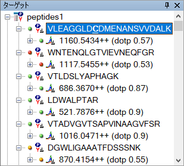
選択したペプチドはピーク品質アイコンが緑色であることから、プロダクトイオン（y1-y11）のピークすべてがほぼ同じ時間に観測されているとわかります。しかし、dotp値（0.57）はあまりよくありません。
ライブラリのMS/MSスペクトルを見てみると、dotp値がよくない原因が理解できます。
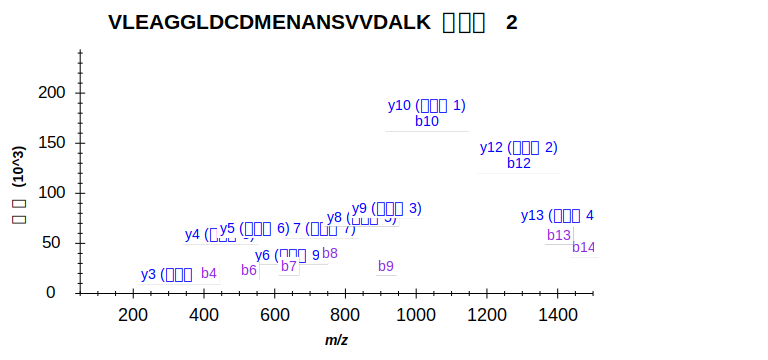
ライブラリのMS/MSスペクトル内で最も強度が高いピーク2つに、y-およびb-イオン（y10、b10およびy12、b12）両方の注釈が付いていることに注目してください。SRM測定に使用したThermo TSQでは一般的にb-イオンはあまり生成しません。そのため、この今回の測定系ではb10およびb12イオンは検出されないと考えます。
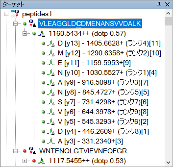
左側の( )に囲まれた数字はライブラリ内のMS/MSスペクトルにおける強度のランクを示します。右端の[ ]に囲まれた数字は実際にSRM測定をした結果から得られる各プロダクトイオンのピーク領域のランクを示します。このランクは、実測値とライブラリ内のMS/MSスペクトルがどの程度一致しているかを判断する指標となります。ただしこのチュートリアルでは、このペプチドを削除する必要があります。
次のペプチド（WNTENQLGTVIEVNEQFGR）は明らかに測定が上手く行えていません。なぜなら、ピーク品質アイコンが赤色であり、またdotp値も0.34と非常に小さいからです。これも消去してください。
その次の3つのペプチドは、測定可能ペプチドの非常に良い例です。なぜなら、3つのペプチドすべてでピーク品質アイコンが緑色であり、またdotp値も0.87以上と非常に高いからです。各ペプチドに対して3つのトランジションを組み込むとして、まずは1つ目のペプチドについて考えてみましょう。
2つ目のペプチドLDWALPTARでは、ライブラリ内のMS/MSスペクトルにおけるrank 4のピークはrank 3とほぼ同一の結果です。トップ3のSRMピーク[1]、[2]、[3]を維持してください。
組み込むトランジションは以下のように考えられるはずです。
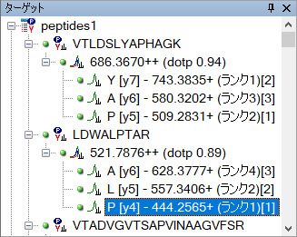
3つ目のペプチドとそのトランジションを見てみると、y3イオンがSRM測定結果の中で3番目に大きいピーク領域を持つことがわかります。しかし4番目にランク付けされたy13イオンもターゲットとして用いるのに十分なピーク領域を持ちます。強度が高い4つのピーク以外をすべて消去して、Shift+F11を押してズームアウトすると、y3イオン・y13イオンの測定はどちらもノイズなどによる影響が少ないことが見て取れます。一般的にトランジションを組む際プロダクトイオンの強度が同じであるなら、できるだけ長い配列を持つイオンを選択しメソッドを構築する方が、より高い選択性を持つ測定が行えます。そのため、今回はy13イオンをプロダクトイオンとして選択し、トランジションを組むほうがよいでしょう。以上からこのチュートリアルでは、y14、y13、およびy11イオンをプロダクトイオンとして選択します。
同様の方法を続けて、次の2つのペプチドを消去します。さらに、その次のペプチドに対して、高強度、低ノイズで、高い選択性のトランジションを選択します。または、Skyline最適化フォームを使用して多くの初期フィルタリングを一度に行うこともできます。
Skyline最適化では、大半の調整操作を自動的に行うことが可能です。このチュートリアルでここまで手動で行ってきたタイプの調整は、以下を行ってシングル操作で実行可能です。
これにより80個のペプチド、240個のトランジションが組まれます。以下の作業で自動最適化がうまくいっているかどうかを、クロマトグラム内で確認します。
しかし、ここまでの操作ではペプチド選択に対する閾値の設定が少し厳しすぎるかもしれません。よって、最初の自動最適化での閾値を少し低く設定するために、初期自動最適化と手動での確認を組み合わせた半自動化の方法の手順を追加します。
この設定では測定対象として127個のペプチドが選択され、ピークの品質を示す指標となるdotp値を計算するのに十分なトランジション数が組まれます。最終的な最適化は、[ 最適化 ] フォームがまだ不足している可能性があるということを考慮して手動で行うことができます。
みなさんが編集中のSkylineドキュメントは、2009年春にMacCoss labでの実際の実験に使用されました。しかし当時はSkylineに [ 最適化 ] フォームはなく、dotp値の計算もできませんでした。したがって、当時は手動で測定対象ペプチドを86個に削減し、メソッド最適化サイクルを次のフェーズに進めました。以下は、当時行ったのと同じ手順です。
これで、すべての未最適化の結果およびクロマトグラムが削除されます。
これによりSkylineは、MethodRefineフォルダ内の2つのフォルダ（Unscheduled01およびUnscheduled02）から、スケジュール化されていない2種の測定結果ファイルを新たにインポートします。各フォルダには2つのRAWファイルが含まれており、これらのRAWファイルには、最初の最適化で選択されなかったすべての測定ペプチドに対して、3つのスケジュール化されていないトランジションのクロマトグラムが記録されています。
現在のドキュメントには、これらのRAWファイル内で検出されなかった多数のトランジションも含まれています。検出されたトランジションのみへドキュメントを削減するには、以下の手順を行います。
これにより、86個のペプチドと255個のトランジションが残ります。
これらのペプチドは2回よりも4回に分けてインジェクションして測定したほうがよいかもしれません。しかし、メソッド最適化の第2フェーズの目的は、スケジュール化に必要な予測保持時間を決定することです。したがって、1サイクルの時間を長くし、時間軸におけるデータ点を少なくすることによって、必要な注入回数を削減することにしました。
以下の操作により、我々が測定に使用したものと同様のトランジションリストを作成可能です。
[ トランジションリストをエクスポート ] は以下のように表示されます。
MethodRefineフォルダを調べてみると、2つのトランジションリストCSVファイル（Unscheduled_0001.csvおよびUnscheduled_0002.csv）が見つかります。これらは、先ほどインポートしたファイルのような、データを新規に収集するために利用可能です。
保持時間情報が得られたかを再確認するには以下を行います。
2回の繰り返し測定の両方のクロマトグラムが、以下のように表示されます。
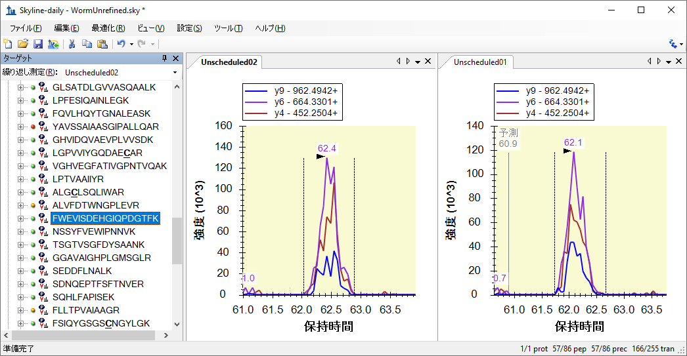
これらの予測された保持時間を前提として、以下を行うことで、トランジションをスケジュール化する方法の概要を理解することが可能です。
Skylineに以下のようなグラフが表示されます。
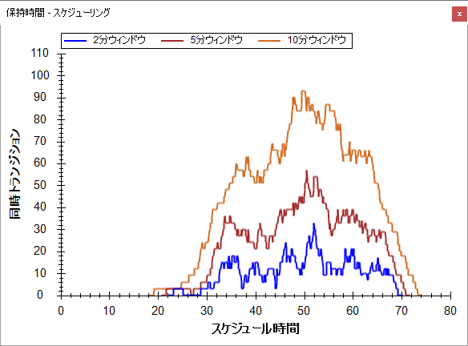
このグラフより、測定中のある時間（横軸）において同時に測定する必要のあるトランジション数（縦軸）が、トランジションの測定時間ごとにわかります。1トランジションの測定時間ウィンドウが長くなるほど、より多くのトランジションを同時に測定する必要が発生します。今回の場合は、各トランジションの測定時間ウィンドウを5分に設定すると、最大で約60のトランジションを同時に測定する必要があります。使用する装置のスピードに応じて1トランジションあたりの測定時間を設定することにより、1回の測定で各ペプチドの全トランジションで溶出曲線を描くのに充分なデータを取得することができるでしょう。
各トランジションの測定時間は、クロマトグラフィーの再現性を考慮して決定します。ペプチドの保持時間の変動に対して、短すぎる測定時間を設定すると、ピークの端が欠けてしまう、またはピークが検出できないといった可能性があります。スケジュール化されたトランジションリストを作成する前に、測定間における保持時間の変動幅を理解しておくことが大切です。
最大数のトランジションが同時測定される場合であっても、ペプチドの溶出曲線を描くのに十分なデータが得られるサイクル時間となるように測定時間を決定する必要があります。我々はこの実験で測定時間を4分とすることでこれを達成しました。同一のことを行うには、以下の手順を実行します。
[ ペプチド設定 ] は以下のように表示されます。
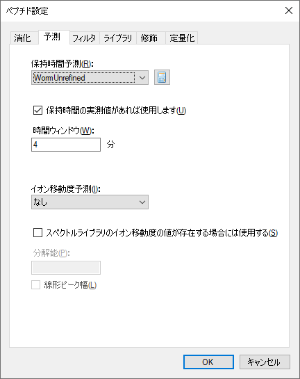
[ トランジションリストをエクスポート ] フォームは以下のように表示されます。
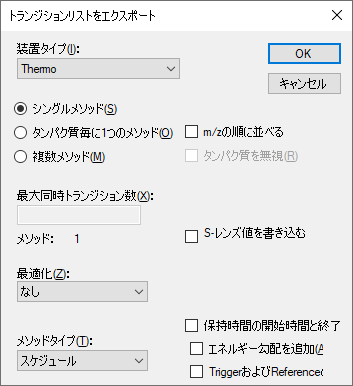
MethodRefineフォルダ内に、新たにスケジュール化されたSRMトランジションリストファイル（Scheduled.csv）が作成されます。当該ファイルをExcelで開くと、4分間の測定の開始・停止時間がD列およびE列に追加されていることが確認できます。

ここまでの操作でSRMメソッド最適化サイクルを開始する準備が完了しました。我々はペプチドのターゲットモードでの測定で生じる以下のような問題を明らかにするため、次の実験において複数の繰り返し測定を行いました。
このメソッドを用いた5回の繰り返し測定の結果を確認するには、以下の手順を実行します。
これにより、スケジュール化されていない繰り返し測定およびクロマトグラムグラフが削除されるはずです。
5回の繰り返し測定ごとにタブが作成され、データのインポートが開始されます。Skylineウィンドウ下部のステータスバーとグラフで進行状況が表示されます。
インポートが完了すると、スケジュール化していない分析ランで測定した一部のペプチドが、スケジュール化した分析ランでは削除されたことがわかります。これは色のついたドットがないためです。以下の手順に従い、測定されたペプチドのみを残してドキュメントを縮小することができます。
これらのデータを確認するには、以下を行います。
Skylineウィンドウが以下のように見えるまで、スプリッターおよびウィンドウサイズを調整します。
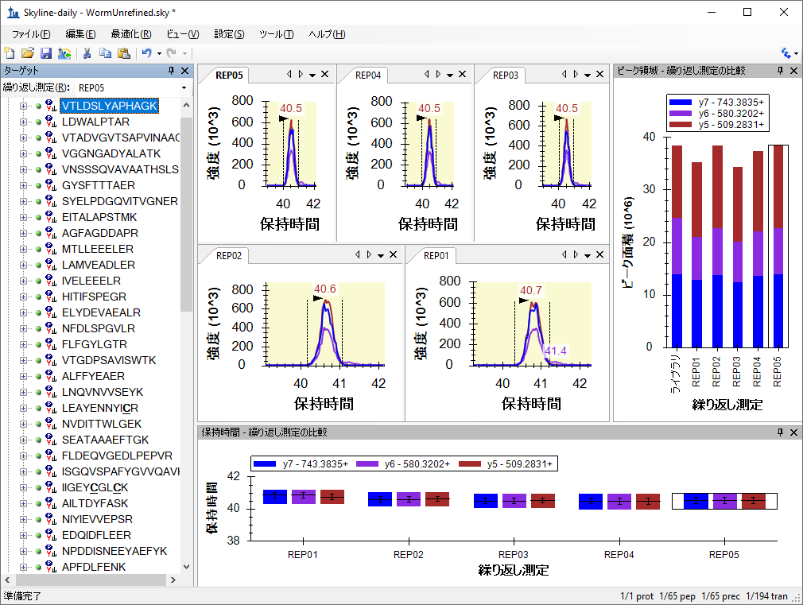
ここで下向き矢印キーを使用すると、これらのペプチドについて収集したデータを確認することが可能です。複数の繰り返し測定により最適化したSRMメソッドの詳細については、その他のチュートリアルで説明いたします。
このチュートリアルでは、ターゲットプロテオミクスメソッドを作成し、繰り返し測定を伴う定量研究用にそれらを最適化するSkylineの強力なツールについて紹介しました。本チュートリアルで、2サイクル以上のメソッド最適化サイクルを行ったみなさんは、Skylineを自身のプロテオミクス研究を展開するのに役立てることができるはずです。今回行ったこと以外に、衝突エネルギー（CE）といった装置パラメータの最適化、定量精度改善のための標識付き内部標準ペプチドの導入、または校正曲線の実行などもSkylineを用いて行うことができます。その他のSkylineチュートリアル・Skyline機能も利用して、ターゲットプロテオミクス実験にSkylineを最大限活用してください。
1. Prakash,A. et al. Expediting the development of targeted SRM assays: Using data from shotgun proteomics to automate method
development. J Proteome.Res. 2009.
Ref Type: In Press
2. Sherwood,C.A. et al. Correlation between y-type ions observed in ion trap and triple quadrupole mass spectrometers. J. Proteome. Res. 8, 4243-4251 (2009).
3. Krokhin,O.V. Sequence-specific retention calculator. Algorithm for peptide retention prediction in ion-pair RP-HPLC: application to 300- and 100-A pore size C18 sorbents. Anal. Chem. 78, 7785-7795 (2006).
4. Stein,S.E. & Scott,D.R. Optimization and Testing of Mass-Spectral Library Search Algorithms for Compound Identification. JASMS 5, 859-866 (1994).
5. Tabb,D.L., MacCoss,M.J., Wu,C.C., Anderson,S.D., & Yates,J.R., III Similarity among tandem mass spectra from proteomic experiments: detection, significance, and utility. Anal. Chem. 75, 2470-2477 (2003).